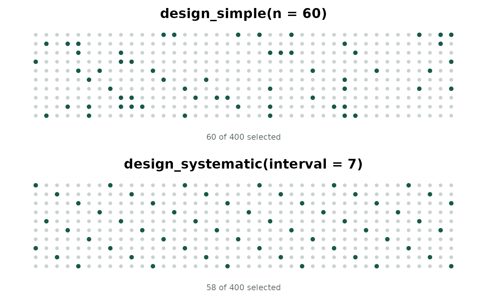
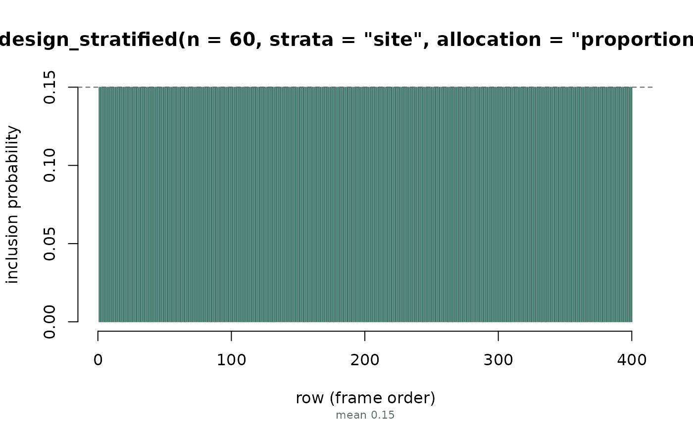

Draws the design against a population so you can see what it selects. Two views, and both answer questions that a table of numbers answers slowly:
Arguments
- x
A design object.
- y
The population data frame to draw against.
- type
`"selection"` or `"probability"`.
- seed
Optional seed for the `"selection"` draw, so the picture is reproducible.
- ncol
Dots per row in the `"selection"` grid.
- max_dots
Frames larger than this are shown as an evenly spaced subset, with a note under the plot. Keeps individual dots visible.
- col, col_bg
Colours for selected and unselected rows.
- main
Title. Defaults to a description of the design.
- ...
Passed to the underlying plot call.
Details
- `"selection"`
Every row of the frame as a dot, laid out left to right and top to bottom in frame order, with the selected ones filled in. Designs look distinct: simple random sampling scatters, systematic makes a lattice, cluster sampling takes solid contiguous runs, and probability-proportional-to-size thickens wherever the weight is large. If your frame is sorted by something meaningful, an unintended pattern shows up here immediately.
- `"probability"`
Each row's inclusion probability against its position. Flat means every row had the same chance; steps mean strata; a slope means size-proportional selection. Rows the design can never reach sit at zero, which is usually the thing you wanted to find out.
Base graphics, so there is no plotting dependency to install.
Examples
pop <- data.frame(
id = 1:400,
site = rep(c("a", "b", "c", "d"), times = c(200, 100, 60, 40)),
cl = rep(paste0("c", 1:40), each = 10)
)
op <- par(mfrow = c(2, 1), mar = c(2, 1, 2, 1))
# Scattered, versus a visible lattice
plot(design_simple(n = 60), pop, seed = 1)
plot(design_systematic(interval = 7), pop, seed = 1)

par(op)
# Where the probabilities sit
plot(design_stratified("site", n = 60), pop, type = "probability")
